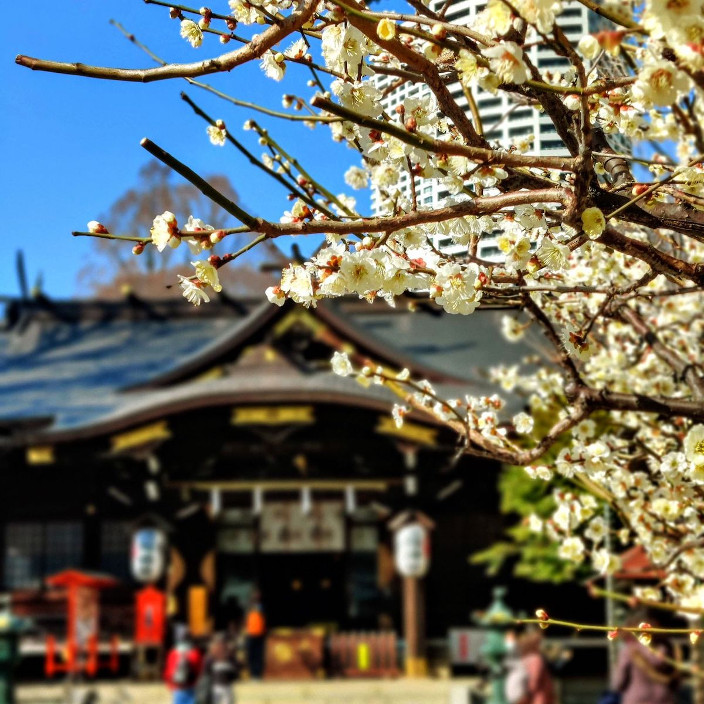
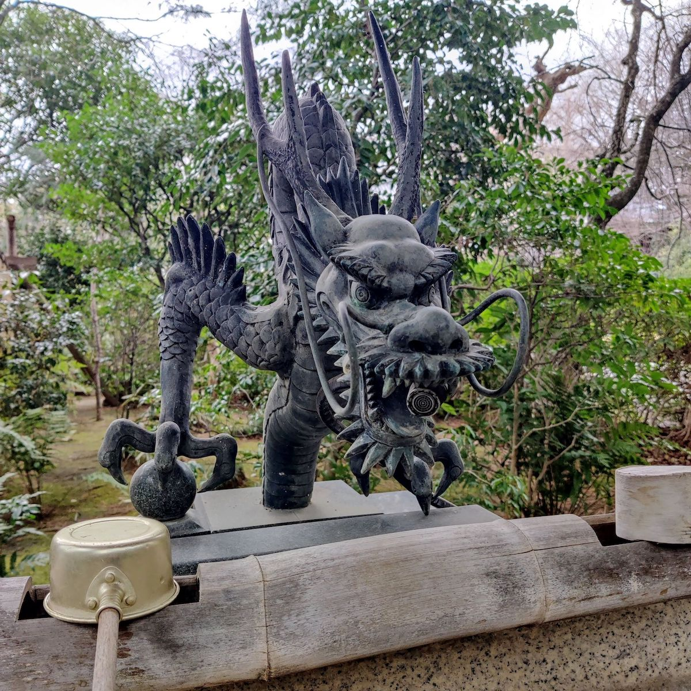
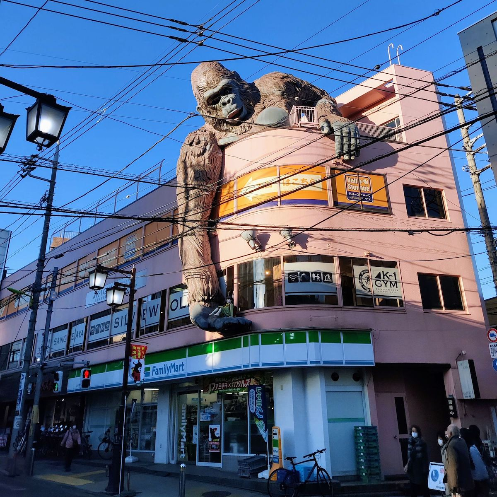

長い週末
Monday, 27 February 2023僕は随分怠け者だ。「毎日、日記に書くよ！」と言ったんだけど、あまり書いていない。
ともかく、先週は凄く短かった。僕はだけ月曜日から水曜日まで働いた。
木曜日
凄くゆっくり朝だった。天気は良かったので、私達は木曜日に新宿のあたりに散歩した。
それから、インドのレストランで昼ごはんを食べた。美味しかった。🤤

金曜日
今年たくさん休みが掛からなかったから、金曜日に休んだ。
天気は良くなかったので、私達は家でゴロゴロした。
でも、よる友達と晩御飯食べにあった。天ぷらを食て、お酒を飲んだ。🤤
土曜日
私達は長い散歩した。今度、代々木公園から小園児まで歩いた。
寒すぎたけど、少しお寺達に見によった。

日曜日
昨日もゆっくりだったけど、天気はきれいだった。
私達はまた長い散歩したくなかったから、三軒茶屋に歩いた。住んでいるところから遠くない。
昨日は長い週末から完全な終わりだった。
